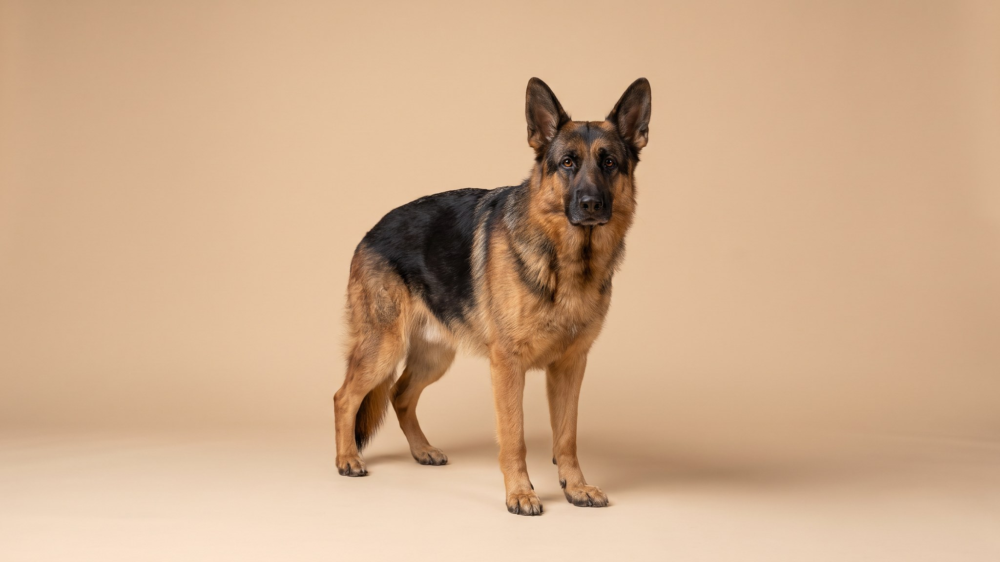

Аусси-дудл появился в соцсетях раньше, чем в большинстве питомников: кудрявая шерсть, яркий взгляд, обаятельная мордашка. За картинкой — собака с мощным интеллектом и потребностью в работе. Без достаточной нагрузки она сама найдёт занятие — и вам не понравится. Вот что стоит знать до того, как взять щенка.
🐾 Ваш питомец — аусси-дудл?
Заведите профиль в AnimaLife: приложение запомнит породу, возраст и вес и будет подсказывать по уходу именно для неё. Вопросы AI-ветеринару — круглосуточно и бесплатно.
Завести профиль → Завести в MAX →
У вас iPhone? AnimaLife есть в App Store
Аусси-дудл — метис австралийской овчарки (аусси) и пуделя, чаще всего стандартного или миниатюрного. Породу начали целенаправленно разводить в 1990-х в США. Не существует единого стандарта: помёт одного питомника может сильно отличаться от другого по размеру, типу шерсти и характеру — в зависимости от того, какие качества родителей проявились сильнее.
Оба родителя входят в топ пород по рабочему интеллекту. Результат предсказуем: аусси-дудл — одна из самых способных к обучению собак среди метисов.
Австралийская овчарка создана для многочасовой пастушьей работы. Пудель исторически работал как охотничья собака-апортировщик. Сложите это — и получите собаку, которой нужно занятие минимум 1,5–2 часа в день.
Это не плохое поведение — это нереализованная потребность. Лечится нагрузкой, а не наказанием.
Аусси-дудл — «липучка»: он следует за хозяином по квартире, ложится рядом, хочет участвовать в любом деле. Это приятно — но оборачивается проблемой, когда хозяин уходит на работу.
Одиночество переносится тяжело. Собака, которую регулярно оставляют одну на 8–10 часов, тревожится, скулит, может вести себя деструктивно. Если в доме нет другого животного или человека, который остаётся, — стоит заранее продумать, как закрыть эту потребность.
Шерсть аусси-дудла варьируется от почти прямой до плотно кудрявой — зависит от конкретного помёта. Кудрявые и волнистые варианты почти не линяют на пол, но быстро образуют колтуны, если не расчёсывать регулярно.
Уход за шерстью занимает время и стоит денег. Это нужно учитывать до покупки щенка.
Пудель нередко называют гипоаллергенной породой — и это стало одним из аргументов в пользу аусси-дудла. Реальность сложнее. Аллергия на собак — реакция преимущественно на белок Can f 1 в слюне и перхоти, а не только на шерсть. У метисов тип шерсти и уровень аллергенов непредсказуемы: один щенок из помёта даёт меньше реакцию, другой — больше.
Если аллергия у кого-то из домашних — сначала проведите время с конкретной собакой. Гарантий «гипоаллергенности» у аусси-дудла нет.
Аусси-дудл — хороший выбор для активной семьи или человека, у которого есть время на ежедневные тренировки и готовность к регулярному груминг-расписанию.
Порода не подойдёт, если: большую часть дня все на работе, нет времени на обучение, груминг кажется лишними расходами или хочется спокойную самодостаточную собаку.
Материал носит информационный характер и не заменяет очную консультацию ветеринара.
🐾 У вас аусси-дудл?
AnimaLife соберёт уход под породу: к каким болезням есть склонность, что проверять по возрасту, чем кормить и когда пора к врачу. Бесплатно, прямо в мессенджере.
Собрать план ухода → Собрать в MAX →
У вас iPhone? AnimaLife есть в App Store
🐾 Понравился разбор?
Подпишитесь на канал — каждый день разбираем по одному тревожному симптому у кошек и собак: что в пределах нормы, а когда пора к врачу. Подпишитесь, чтобы не пропустить разбор, который может спасти здоровье вашего питомца.